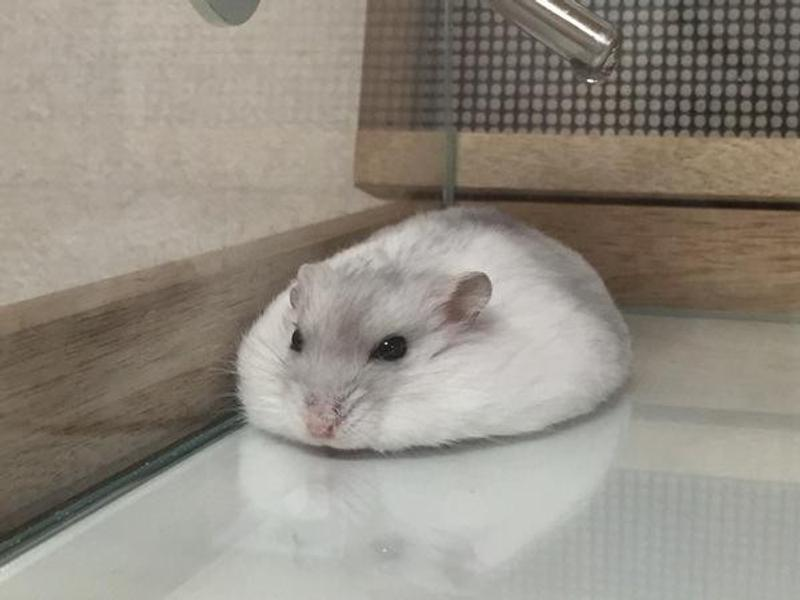

加卡利亞倉鼠 (Winter White Dwarf Russian Hamster)/短尾侏儒倉鼠
俗稱：三線鼠、趴趴鼠、布丁、銀狐、紫倉、冬白、楓葉鼠。
身長：約7~10cm
體重：約30~40g
壽命：約1.5~2.5年
屬於毛色變化豐富的品種，會隨季節或是時間改變，因此擁有許多別名。
像冬白的由來就是因為，在冬天隨著陽光的照射，有的野生色會轉變成白色，趨近於銀狐的毛色，因而得名。
主要分布於新疆、西伯利亞等地。
個性：溫和不怕人、容易和飼主親近。
習性：不太喜歡其他鼠鼠，不應將互相不認識的三線鼠放在一起。
